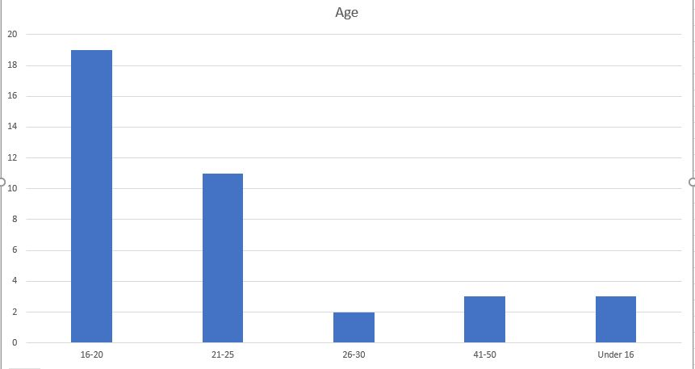
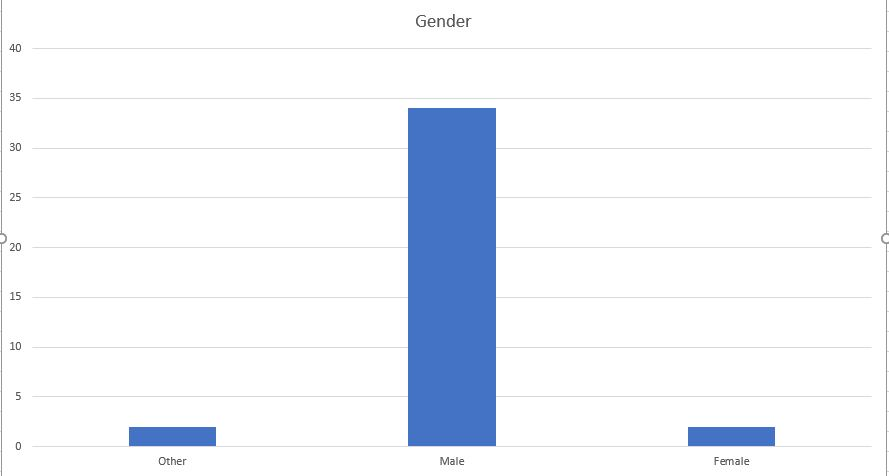
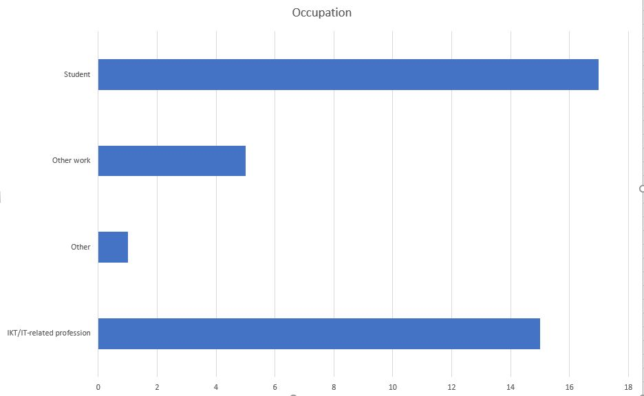
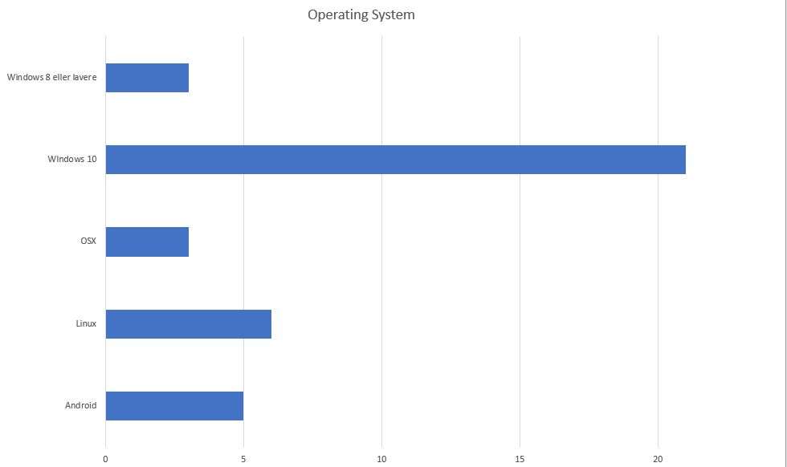
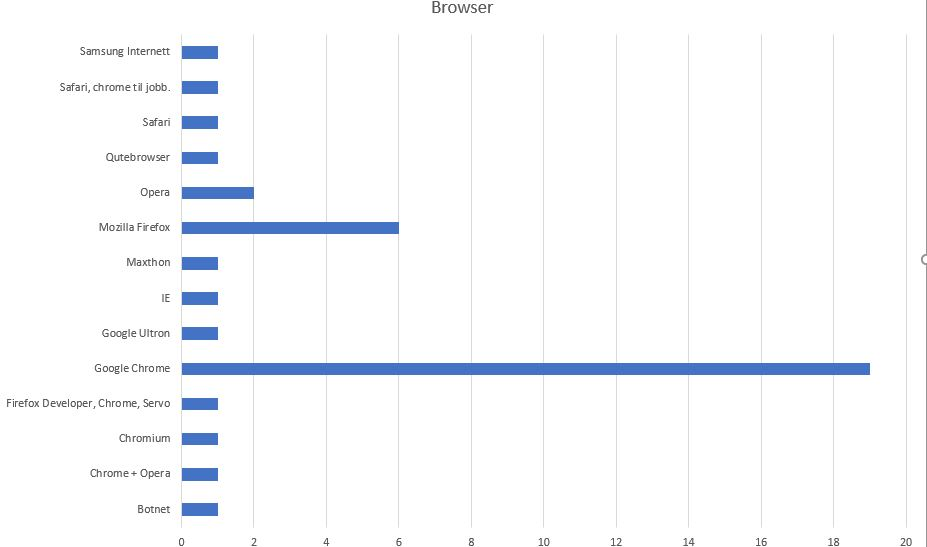
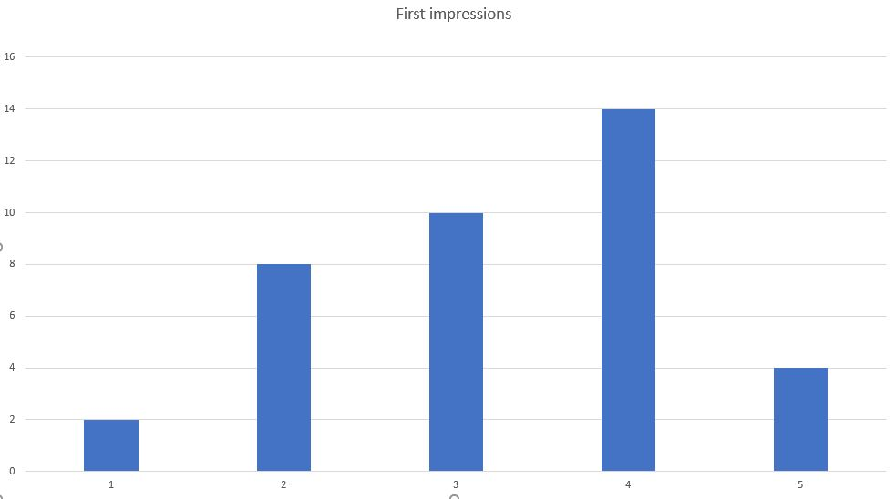
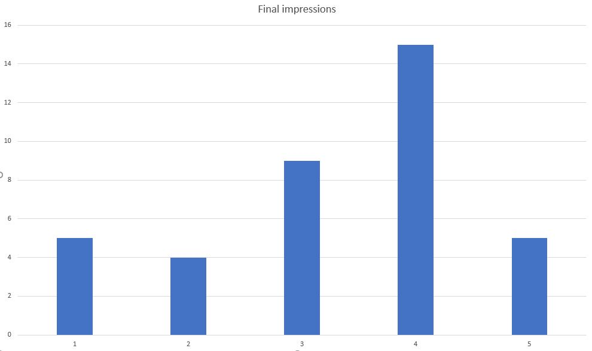

Our client is named Ragnhild Kristensen, and is the chief of communication at Studentpartiet. She is also a public communication student at NTNU.
Link to frontpageFor the live testing we used students, who are the main audience for the page.
The live test group liked the design. But they thought some parts could have been done better. The political program page could have been informing the user that you could select one party and one case. One user thought it was weird that we had Political programs at the top of the page AND at the navigation bar. They also thought the navigation bar bar was way to big and annoying that they had to scroll. The linking from the main page was good. Mobile users thought the timeline was a little bit hard to read.
No live users had any problems navigating on the page.
No live users had anything in mind.
First of all was the demographics, so that we could know who were answering the survey.
The first impression is important, because that cause a sudden like or dislike in people.
Studentpartiet's main political objectives were supposed to be in focus, and this is a way to see if they actually were.
It is important that it is easy to compare the parties, because all of Studentpartiet's opinions are on this page.
Donating money is an important function as that is supposed to be Studentpartiet's main funding source.
This question both test the site's navigation structure, and if people are able to find information, which is useful as people probably have never heard of the party before.
Same as above.
This makes us able to see if users like or dislike the page more than they did by the first impression.
This makes us able to see if users have any relevant comments that doesn't suite well under the other categories.
* = on these questions, users were asked if they had any comments as well.
(Scale) = on these questions, users answered on a scale between 1 and 5, where 5 is best.
We had 38 users experience the website while answering our survey. This was between | 1/10/2017 20:58:17 | and | 11/13/2017 11:35:14 |. (over a span of two days)
The testers were mostly between 16 and 25, but with some older users up to 50 and some users below 16.
The users were mostly male.
Mostly students and IT-experienced users.
Mostly desktop systems.
A wide variety of different browsers, some users tested in multiple browsers
We averaged a score of 3.2 out of 5 points.
We averaged a score of 3.3 out of 5 points.
Political comparison: Average score of 3.5 out of 5.
Donation page: Average score of 4.0 out of 5.
About page: Average score of 3.7 out of 5.
History page: Average score of 3.4 out of 5.
We got an average of 3.2 points on a scale from one to five.
The main objective for the front page was to emphasize the party's main political objectives. Several people listed them as their first impression, which makes us believe that this goal was achieved.
A common response was that the site was too wide, especially on big screens, therefore i think we should have used e.g. max-width or tried to make the site more responsive to big screens, where we didn't pay much attention when we designed the site.
Some people commented that links weren't highlighted enough on the site, and that we would probably should have links in a different color.
Some people commented that two navigation structures were unnecessary. It is possible that we should have kept us to have just one of them. One person also commented that the button for the navigation bar was hard to find, and that it's icon should have been larger
There are different opinions here. Some people commented that the page was good because it was simple, others commented that the site was bad because it lacked there wasn't enough information on each site. We can't make everyone happy here.
We got an average of 3.5 points on a scale from one to five.
Several users commented that the comparison was easy to use, which was important to us.
Many people commented that it was hard to distinguish the issues and the parties, specially on mobile. Some also commented that it would be great if we labeled them after what they were used for. This means that we should have grouped the issues and the parties properly so they were easily distinguishable.
Some people complained also here, that the page was too wide, which means we should have used a max-width or similar.
One person also commented that we should emphasize the differences more, instead of just showing their opinions. But that would go against the objective which was an neutral comparison. If Studentpartiet wrote the difference, their bias would probably influence how the text is written, instead of letting other parties talk for themselves.
We got an average of 4.0 points on a scale from one to five.
The high score implies that the donation process was easy.
One person commented that it would be possible to donate any amount, not just the options on the page.
One person commented that users should have a way to double check the information before they are sent, when they register as a member of the party.
There are different opinions on design, where all can't be taken into account simultaneously.
We got an average of 3.7 points on a scale from one to five.
Replies suggest that the about page was easy to find.
Several commented that the information on the about page was too limited, and even that they got more information about the party on the front page. This means we should put more information on this page.
One person commented that the textbox went out of the screen on the mobile page, which should be fixed.
One person commented that nothing was centered on the page, but the intended design was centered, which means that this should be as well.
There are different opinions on design where all can't be taken into account simultaneously.
We got an average of 3.4 points on a scale from one to five.
We got comments that said this history line was a cool feature on the site.
The only complaint here is that there should be more spacing between the paragraphs, as the paragraphs appeared too fast when scrolling down.
One person commented that the page was messy, without telling why.
We got an average of 3.3 points on a scale from one to five.
Some people commented that the page was easy to use.
One person commented that the design on the pages should be more universal.
Some people commented that there were bugs on with the navigation bar, that should be fixed.
Some people also commented that there were some typos on the page
People commenting on the design in general and the critique is often not constructive, but rather just saying that it is "bad" or something.
The score was slightly better for final impressions than first impressions, something that implies that the design is dragging our score down. This suites well with all the comments criticizing the page design.
The actual coding with html, css and javascript was ok (was a bit hard at times, at least css), but what might be the hardest part about the project was to design the webpage to make it look pretty (that's probably why companies have a designer to designer and coders to code). This project really taught us how much documentation and planning that goes into a project (even a small one like this) and how hard it can be to coordinate tasks to team members. Especially how to finish tasks that has to be done before you can start on another task. Overall it was a decent learning experience.